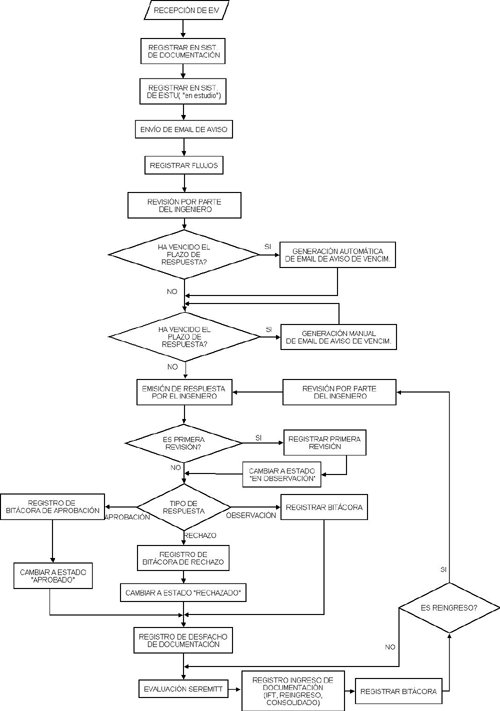

El procedimiento realizado en UOCT sobre los EISTU(o EISTU) se puede graficar de la siguiente forma:

De acuerdo a este procedimiento, un EISTU puede tener los siguientes estados:
Además de estos estados, la ventanilla única de SEREMITT puede emitir documentos en los cuales se aprueba o rechaza el estudio( además puede emitir documentos en los cuales se indican las medidas que se deben tomar sobre un estudio, lo que se denomina IFT), debido a esto se deben manejar dos estados más:
El proceso de cambio de estado de un EISTU, ya sea con respecto a UOCT( primeros 4 estados mencionados) o en SEREMITT ( últimos 2 estados mencionados), es controlado por medio del ingreso de bitácoras que registran el historial de un estudio.(ver registro de bitácora)
Registrar EISTU (Restringido a personal autorizado)
Editar EISTU (Restringido a personal autorizado)
Buscar EISTU (Restringido a personal autorizado)
- Seleccionar la opción "Buscar EISTU" en la sección "EISTU" del menú de la Intranet.
- Ingresar los parámetros de búsqueda de EISTU. Los parámetros disponibles para buscar EISTU son:
- Código del EISTU: Número identificador del estudio.
- Palabra clave: Cualquier palabra que se encuentre en el título del estudio.
- Fecha de Vencimiento.Se debe indicar un rango de fechas entre los cuales se encuentre el estudio.
- Estado: Cualquiera de los estados posibles para un estudio( Ingresado, en observación, Aprobado, Rechazado).
- Estado en SEREMITT: Si está aprobado o rechazado por la SEREMITT.
- Ingeniero encargado: Persona del área de ingeniería a cargo de la evaluación del estudio.
- Comuna.Comuna en donde se realizarán las obras correspondientes al estudio.
- Red involucrada: Cualquiera de las redes afectadas por el estudio.
- Consultor: Empresa o persona autora del estudio.
- Presionar el botón "buscar", con lo que se mostrará una lista con los estudios que coinciden con los parámetros ingresados. SI NO INGRESA PARAMETROS SE LISTARÁN TODOS LOS ESTUDIOS, lo que puede hacer engorrosa la búsqueda.
- Seleccionar el EISTU que se desea conocer en detalle desde la lista de EISTU coincidentes con los parámetros de búsqueda, por medio de un click en el código del EISTU.
- Se mostrará el detalle del EISTU seleccionado junto con opciones para ver en una ventana distinta el Detalle del EISTU y la lista de bitácoras, el Detalle del EISTU y el detalle de las bitácoras,el Detalle del EISTU con el Detalle de las bitácoras y los flujos del EISTU. Dentro del mismo detalle del EISTU se muestran los flujos asociados al EISTU y una lista de las bitácoras, cada una con un link para ver el detalle de ella.
- De acuerdo a los permisos del usuario se pueden mostrar en el mismo detalle de EISTU las opciones para editar los datos del EISTU, para administrar las bitácoras,administrar flujos vehiculares del EISTU, Despachar EISTU, Reingresar EISTU,Aprobar/Rechazar el EISTU.
Registrar Flujos(Restringido a personal autorizado)
Para registrar los flujos vehiculares asociados a un EISTU se puede realizar por dos formas.
La primera forma es:
- Realizar la operación Registrar EISTU.
- Posteriormente al ingreso del EISTU se mostrará el formulario para ingresar los flujos asociados al EISTU recientemente ingresado.
- Cada vez que se ingrese una medición de flujos vehiculares se mantendrán los datos ingresados en el formulario para facilitar el ingreso de las posteriores mediciones de flujos.
La segunda forma es:
- Una vez que el EISTU ha sido registrado, seleccionar la opción "Editar EISTU" en la sección EISTU del menú.
- Ingresar los parámetros de búsqueda de EISTU y presionar el botón "Buscar".(ver Buscar EISTU)
- Se mostrará una lista con los EISTU coincidentes con los parámetros de la búsqueda. Para cada EISTU listado se muestran distintas opciones, entre las que se encuentra: Editar EISTU, Admin. Flujos,Admin. Bitácora, Agregar Bitácora y,Enviar Email de Vencimiento.
- Seleccionar la opción "Admin. Flujos".
- Registrar los flujos en el formulario que se muestra.
- Cada vez que se ingrese una medición de flujos vehiculares se mantendrán los datos ingresados en el formulario para facilitar el ingreso de las posteriores mediciones de flujos.
Eliminar Flujos (Restringido a personal autorizado)
- Seleccionar la opción "Editar EISTU" en la sección EISTU del menú.
- Ingresar los parámetros de búsqueda de EISTU y presionar el botón "Buscar".
- Se mostrará una lista con los EISTU coincidentes con los parámetros de la búsqueda. Para cada EISTU listado se muestran distintas opciones, entre las que se encuentra: Editar EISTU, Admin. Flujos,Admin. Bitácora, Despachar EISTU, Registrar Reingreso, Aprobar/Rechazar,Enviar Email.
- Seleccionar la opción "Admin. Flujos".
- Cada flujo vehicular de la lista que se muestra en pantalla posee un botón "eliminar", con lo que se eliminará solamente el flujo correspondiente al botón cliqueado.
Buscar Flujos (Restringido a personal autorizado)
Registrar bitácora.(Restringido a personal autorizado)
Para registrar una bitácora para un EISTU se deben seguir los siguientes pasos:
Se puede acceder al mismo formulario de ingreso de bitácora desde el detalle de un EISTU.(ver Buscar EISTU)
Editar Bitácora. (Restringido a personal autorizado)
El editar una bitácora implica editar los datos que la describen, para lo cual se requiere seguir los siguientes pasos:
1. Seleccionar la opción "Editar EISTU" en la sección
"EISTU" del menú de la Intranet.
2. Ingresar los parámetros de búsqueda de EISTU y presionar
el botón "Buscar".
3. Se mostrará una lista con los EISTU coincidentes con los parámetros
de la búsqueda. Para cada EISTU listado se muestran distintas opciones,
entre las que se encuentra: Editar EISTU, Admin. Flujos,Admin. Bitácora,
Registrar Bitácora y Enviar Email.
4. Seleccionar la opción "Admin. Bitácora".
5. Se listarán todas las bitácoras del EISTU cada una con
su respectiva opción "editar". Cliquee "editar"
al lado de la bitácora que desea editar, con lo que se mostrará
un formulario en el cual se puede editar tanto la fecha de la bitácora,
la descripción o cambiar el documento asociado a la bitácora.
Luego de realizar los cambios correspondientes se debe presionar el botón
"Actualizar bitácora", con lo que se guardarán los
cambios.
También se puede llegar a la edición de bitácora por medio de la pantalla de detalle de EISTU(ver buscar EISTU), en la cual, solo si se tienen los permisos correspondientes, se mostrará un enlace para "administrar bitácora".
Eliminar Bitácora. (Restringido a personal autorizado)
Primera forma de eliminar bitácora:
1. Seleccionar la opción "Editar EISTU" en la sección
"EISTU" del menú de la Intranet.
2. Ingresar los parámetros de búsqueda de EISTU y presionar
el botón "Buscar".
3. Se mostrará una lista con los EISTU coincidentes con los parámetros
de la búsqueda. Para cada EISTU listado se muestran distintas opciones,
entre las que se encuentra: Editar EISTU, Admin. Flujos,Admin. Bitácora,
Registrar Bitácora y Enviar Email.
4. Seleccionar la opción "Admin. Bitácora".
5. Se listarán todas las bitácoras del EISTU cada una con
su respectiva opción "eliminar ". Cliquee "eliminar"
al lado de la bitácora que desea eliminar.
Segunda forma de eliminar bitácora:
1. Seleccionar la opción "Buscar EISTU" en la sección
"EISTU" del menú de la Intranet.
2. Ingresar los parámetros de búsqueda de EISTU y presionar
el botón "Buscar".
3. Se mostrará una lista con los EISTU coincidentes con los parámetros
de la búsqueda.Para cara EISTU de la lista aparecerá un link
para ver el detalle del EISTU.En el detalle del EISTU se muestran opciones
de acuerdo a los permisos del usuario.
4. Seleccionar la opción "Admin. Bitácora".
5. Se listarán todas las bitácoras del EISTU cada una con
su respectiva opción "eliminar ". Cliquee "eliminar"
al lado de la bitácora que desea eliminar.
Envío de Email de Vencimiento. (Restringido a personal autorizado)
Primera forma de enviar Email:
- Seleccionar la opción "Editar EISTU" en la sección "EISTU" del menú de la Intranet.
- Ingresar los parámetros de búsqueda de EISTU y presionar el botón "Buscar".
- Se mostrará una lista con los EISTU coincidentes con los parámetros de la búsqueda. Para cada EISTU listado se muestran distintas opciones, entre las que se encuentra: Editar EISTU, Admin. Flujos,Admin. Bitácora, Despachar EISTU, Registrar Reingreso, Aprobar/Rechazar,Enviar Email.
- Seleccionar la opción "Enviar EISTU".
- Se mostrará una pantalla con los datos del Email. El usuario debe indicar los destinatarios del email y presionar el botón "enviar".
Segunda forma de enviar Email:
- Seleccionar la opción "Buscar EISTU" en la sección "EISTU" del menú de la Intranet.
- Ingresar los parámetros de búsqueda de EISTU y presionar el botón "Buscar".
- Se mostrará una lista con los EISTU coincidentes con los parámetros de la búsqueda.Para cara EISTU de la lista aparecerá un link para ver el detalle del EISTU.En el detalle del EISTU se muestran opciones de acuerdo a los permisos del usuario.
- Seleccionar la opción "Enviar EISTU".
- Se mostrará una pantalla con los datos del Email. El usuario debe indicar los destinatarios del email y presionar el botón "enviar".
Agregar Comuna (Restringido a personal autorizado)
- Seleccionar la opción "Admin. Comunas" en la sección EISTU del menú de la intranet.
- Registrar el nombre de la nueva comuna y presionar el botón "Registrar".
- La lista de comunas será actualizada y se mostrará un mensaje con la confirmación del registro de la comuna.
Eliminar Comuna (Restringido a personal autorizado)
- Seleccionar la opción "Admin. Comunas" en la sección EISTU del menú de la intranet.
- En la lista de comunas que se muestra en pantalla aparece la opción "eliminar" para cada una de ellas. Cliquee "eliminar" al lado de la comuna que desea eliminar.
- La lista de comunas será actualizada y se mostrará un mensaje con la confirmación de la eliminación de la comuna.La comuna sólo será eliminada si no existe ningún EISTU asociada a ella.
Un tipo de EISTU es una clasificación de estudios, lo que permite describir con más detalle el objetivo del estudio. El administrador de los EISTU puede hacer clasificaciones de acuerdo a su propio orden, sin embargo no puede eliminar tipos de EISTU a los cuales hayan asociados uno o más estudios.
Agregar Tipo de EISTU (Restringido a personal autorizado)
- Seleccionar la opción "Admin. Tipos de EISTU" en la sección "EISTU" del menú de la intranet.
- Ingresar el tipo de EISTU y presionar el botón "agregar".
- Se actualizará la lista de Tipos de EISTU en la pantalla y aparecerá una confirmación del registro del tipo de EISTU.
Eliminar Tipo de EISTU (Restringido a personal autorizado)
- Seleccionar la opción "Admin. tipos de EISTU" en la sección EISTU del menú de la intranet.
- En la lista de tipos de EISTU que se muestra en pantalla aparece la opción "eliminar" para cada una de ellos. Cliquee "eliminar" al lado del tipo de EISTU que desea eliminar.
- La lista de tipos de EISTU será actualizada y se mostrará un mensaje con la confirmación de la eliminación del tipo de EISTU.El tipo de EISTU sólo será eliminado si no existe ningún EISTU asociada a él.